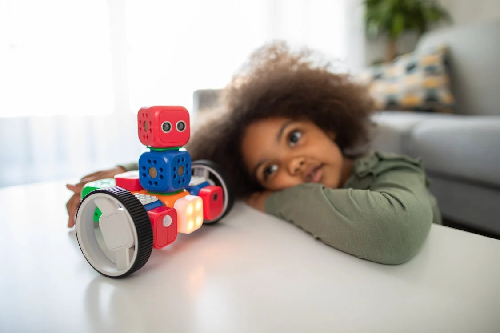
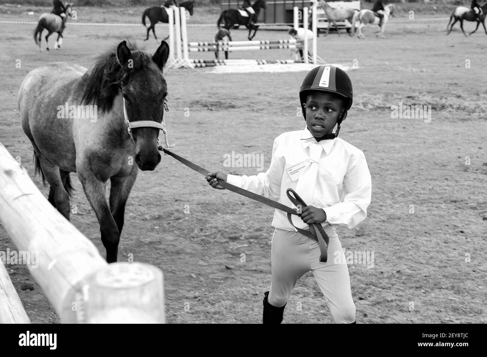
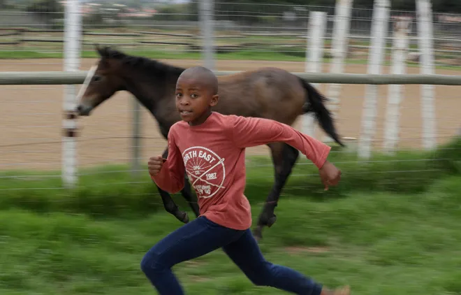
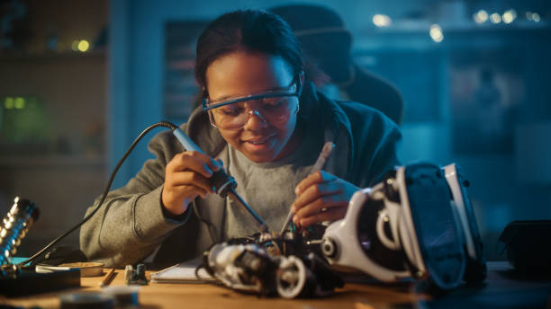

Once upon a time in Nairobi, I, Leo Joe, was born with a curious mind and a passion for technology. Growing up, I found myself enchanted by the world of robotics, spending countless hours tinkering with gadgets and exploring the endless possibilities of the digital realm.
My love for adventure led me to discover unconventional hobbies like horse riding and tennis. The thrill of the racquet, the gallop of the horse – these activities became not just pastimes but integral parts of my identity.
During my school years at Starathmore University, pursuing a degree in IT, I delved into the complexities of coding, problem-solving, and the ever-evolving landscape of information technology.
Outside the academic realm, I embraced the joy of capturing moments through the lens of my camera. Whether it was a stunning sunset or the vibrant energy of a bustling city, I aimed to freeze time and share my perspective with the world.
As life unfolded, I welcomed a furry friend into my world, discovering the profound joy and companionship that a pet brings. Together, we embarked on countless adventures, creating memories that would last a lifetime.
My journey took an exciting turn when I had the privilege to work alongside brilliant scientists, pushing the boundaries of innovation. The collaborative spirit, the exchange of ideas, and the pursuit of knowledge fueled my passion for making a meaningful impact in the tech world.
And so, my story continues to unfold. Join me on this extraordinary journey as I navigate through the realms of technology, creativity, and the boundless possibilities that the future holds.